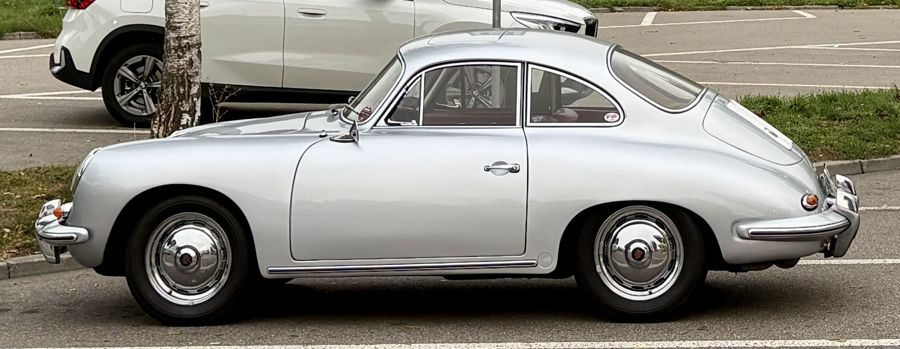

Anlass · Runder Geburtstag
Geschenk 60. Geburtstag: ein Tag, der bleibt
Ob als Geschenk zum 60. Geburtstag, zum 70. oder 80.: Ein persönliches Erlebnisgeschenk schlägt jedes materielle Präsent. Bei tischleinfahrdich.ch fährt Ihr Gast auf dem Beifahrerplatz eines gepflegten Oldtimers ab Thun oder Bern zu einem ausgewählten Landgasthof.
Ein Erlebnisgeschenk ohne Aufwand für die beschenkte Person
Kein kompliziertes Einlösen, keine Haftungsfragen, kein ungewohntes Getriebe: Der Halter holt das Geburtstagskind zur vereinbarten Zeit ab, wählt eine reizvolle Route über Land und bringt es nach dem Mittagessen sicher wieder nach Hause. Der Unkostenbeitrag beträgt CHF 170 pro Stunde.
Ablauf
In drei Schritten zur Ausfahrt
-
1
Abholung
Treffpunkt beim Hotel Bellevue Palace in Bern oder am Rathausplatz in Thun (Restaurant Krone). Auf Wunsch holen wir Ihren Gast zu Hause ab.
-
2
Ausfahrt
Auf dem Beifahrerplatz geht es über schöne Landstrassen durchs Emmental, Gürbetal oder Oberland.
-
3
Einkehr und Rückfahrt
Mittagessen in einem ausgewählten Gilde-Restaurant, danach gemütliche Rückfahrt nach Hause.
Die Fahrzeuge
Vier Automobile, vier Charaktere
Sie wählen Ihr Fahrzeug bei der Anfrage, nach Verfügbarkeit. Alle werden von ihrem Halter gefahren und gepflegt.

Porsche 356 B Coupé

Peugeot 203 C

Porsche Boxster S 3.2
Gut zu wissen
Häufige Fragen
Warum passt die Ausfahrt als Geschenk zum 60. Geburtstag?
Viele Geburtstagskinder wünschen sich keine Gegenstände mehr, sondern ein echtes Erlebnisgeschenk mit Charakter – stilvoll, unaufgeregt und persönlich begleitet.
Kann das Geburtstagskind ein Wunschfahrzeug angeben?
Ja, im Konfigurator stehen vier Fahrzeuge (nach Verfügbarkeit) zur Auswahl – vom offenen Sbarro BMW 328 Roadster bis zum Porsche 356 B Coupé von 1962.
Wie hoch ist der Unkostenbeitrag?
CHF 170 pro Stunde, ab 1 Stunde. Bei einer typischen 2- oder 3-stündigen Ausfahrt ergibt das CHF 340.– bzw. CHF 510.–. Das Essen ist nicht inbegriffen: Sie bestellen und bezahlen direkt im Restaurant.
Wie wird der Gutschein zugestellt?
Als PDF per E-Mail, direkt zum Ausdrucken oder Weiterleiten.